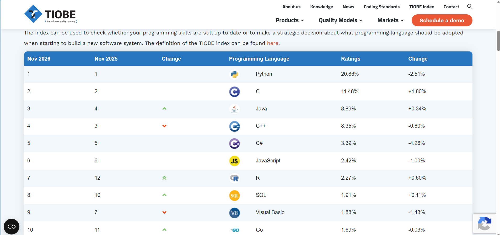

Evidence from two independent sources:
TIOBE Index and Stack Overflow Developer Survey.
Source 01
TIOBE Index (November 2026)

Figure 1: TIOBE Programming Community Index,
November 2026.
According to the TIOBE Index (November 2026),
Java ranked 3rd with a popularity
rating of 8.89%, improving from
4th place in November 2025.
Data Collection
The TIOBE Index measures programming language
popularity using search results from
25 online search engines and websites.
Potential Bias
Search popularity does not necessarily reflect
actual developer usage, as languages with more
online tutorials and documentation may receive
higher ratings.
Conclusion
Java's high ranking indicates that it remains
a well-established and relevant programming
language.
Figure 2: Programming Language Usage,
Stack Overflow Developer Survey 2026.
According to the 2026 Stack Overflow Developer
Survey, approximately 28% of respondents
reported using Java, placing it among
the widely used programming languages.
Data Collection
The survey collected responses from developers
worldwide through voluntary online participation,
asking which programming languages they had used
during the past year.
Potential Bias
Since participation was voluntary, the results
may overrepresent developers who actively use
Stack Overflow and may not fully represent
the global developer community.
Conclusion
Java continues to be widely used by developers,
demonstrating its relevance in modern software
development.
Figure 3: Spring Boot Usage,
Stack Overflow Developer Survey 2026.
Spring Boot is also a widely used Java-based
framework for developing web applications.
According to the Stack Overflow Developer
Survey 2026, approximately
12.8% of respondents to the web
frameworks question reported using
Spring Boot.
This indicates that Spring Boot remains
a relevant framework for backend and
enterprise web development.
However, the survey is based on voluntary
responses and may not fully represent
the global developer population.
Both independent sources indicate that Java
remains a popular and relevant programming
language in 2026.
The TIOBE Index demonstrates Java's strong
online presence, while the Stack Overflow
Developer Survey confirms substantial
developer usage.
The survey also indicates that Spring Boot
continues to be used for web development.
Although the sources have limitations,
their findings support the continued
relevance of Java and Spring Boot.